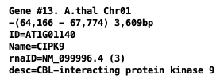
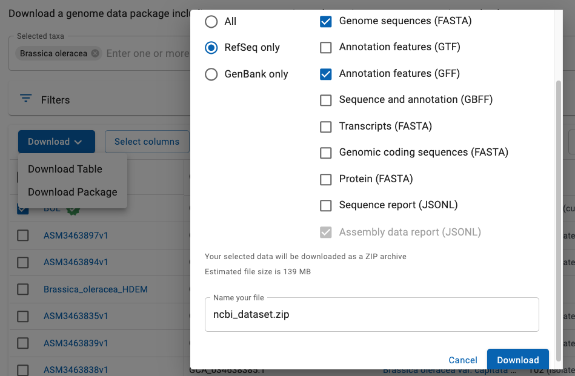

|
NCBI supplies FASTA formatted files for genome sequence and GFF3 formatted files for the annotation,
where FASTA and GFF3 files are the input to SyMAP. Though they can be loaded directly into SyMAP (since v5.5.7),
it is better to convert them.
Contents
Reasons to convert files
- The NCBI name for a chromosome or scaffold are long and crowd the interface. Convert uses
"ChrN" instead for chromosomes only (where the 'Chr' prefix can be removed on load);
when scaffolds are included it uses the prefixes 'C' for chromosome and 's' for scaffold.
- Only the 'protein-coding' genes are processed.
- Only the set of exons from the 1st mRNA are saved in the new GFF file.
- Gene attributes of output GFF file:
| ID | from the input gene attributes.
| | Name | from the input gene attributes (if it is not equal ID).
| | desc | is the gene description;
if it does not exist, then it is the 1st mRNA product. Symbols (e.g. %3B) are replaced with the correct character.
| | rnaID | is equal to the first mRNA ID.
Following the ID is (n), where n=the number of mRNAs
for the gene.
| | proteinID
| (optional) is equal the 1st CDS protein-id of the 1st mRNA.
|
| 
|
- It has an option to produce a hard masked sequence.
- If it has problems converting the NCBI file(s), then symap will have problems loading the original
NCBI files; NCBI formats are not totally consistent,
so this may not take everything into account; check your files with the xToSymap
Summarize files function. The script can be edited.
The following instructions will use Brassica oleracea (wild cabbage) as an example.
Download
Go to NCBI.
- As shown in Fig 1:
- Select Genome from the pull-down at the top.
- Enter you genome name followed by Search.
or, go to All RefSeq
and select your genome.
- As shown in Fig 2:
- From the list of files, select the Assembly you want.
- Select Download Package. As shown, a window will popup with options.
- Select the RefSeq1 format with
the FASTA and GFF files.
- Select Download. By default, a file called ncbi_dataset.zip will be downloaded.
1ConvertNCBI does NOT work with Genbank files, only RefSeq.
Fig 1. Search the NCBI site.

Fig 2. Select the RefSeq genome FASTA and GFF files.
- Go to the symap_5/data/seq directory.
- Make a subdirectory for your species (see Project directory),
move ncbi_dataset.zip to it, and unzip it, e.g.
symap_5/data/seq> mkdir cabb
symap_5/data/seq> cd cabb
symap_5/data/seq/cabb> mv ~/Download/ncbi_dataset.zip .
symap_5/data/seq/cabb> unzip ncbi_dataset.zip
Archive: ncbi_dataset.zip
inflating: README.md
inflating: ncbi_dataset/data/data_summary.tsv
inflating: ncbi_dataset/data/assembly_data_report.jsonl
inflating: ncbi_dataset/data/GCF_000695525.1/GCF_000695525.1_BOL_genomic.fna
inflating: ncbi_dataset/data/GCF_000695525.1/genomic.gff
inflating: ncbi_dataset/data/dataset_catalog.json
- Start the xToSymap program,
select the appropriate options (described below),
then select Convert. The FASTA file must end in ".fna" and the annotation file
must end in ".gff" (the NCBI defaults).
The program will output statistics to the terminal and a log file,
e.g. log.
The results in the cabb directory is as follows:
symap_5/data/seq/cabb> ls -hlG
total 264008
-rw-------@ 1 cari staff 1.6K Jul 23 2024 README.md
drwxr-xr-x 4 cari staff 128B Jul 23 09:54 annotation/
drwxr-xr-x@ 3 cari staff 96B Jul 23 08:19 ncbi_dataset/
-rw-r--r--@ 1 cari staff 126M Jul 23 07:11 ncbi_dataset.zip
-rw-r--r-- 1 cari staff 373B Jul 23 09:56 params
drwxr-xr-x 3 cari staff 96B Jul 23 09:54 sequence/
You may remove everything but annotation/, sequence/ and params.
However, you may want to keep the original data/seq/cabb/ncbi_dataset.
| Option | Description | Default
| | Hard Mask
| NCBI genome sequences are typically soft-masked, where this option changes it to hard masked
| Leave as soft-mask
| | Include scaffold1
| Scaffolds will be included in FASTA and GFF. See section Scaffolds
| No scaffolds
| | Include Mt/Pt
| Mt/Pt chromosomes will be included in FASTA and GFF. Only the first occurrence will be included.
| No Mt/Pt
| | Only prefix2 | Only sequences with the specified prefix will be processed.
| None
| | Protein-id
| A new attribute called proteinID= will be the value of the protein-id of the 1st CDS for
the 1st mRNA of the gene.
This can be searched using the Queries
| Do not include
| | Verbose
| Print extra info, see log.
| No print
|
1You may use Include scaffold, and then limit the input on the symap
Load by setting
Minimal length in the project's
Parameters.
2For situations needing Only prefix,
see exceptions.
Rules: There are variations in the text associated with the FASTA ">" header lines. The rules
used by this script are as follows:
- If Only prefix is not blank, sequences are filtered out if the seqid does not
start with the prefix. Then all the following apply to the non-filtered sequences:
- Chromosomes: The name starts with 'NC_'.
- The exception is that Mt/Pt chromosomes will not be output unless Include Mt/Pt is selected.
Mt/Pt: header line contains the word 'mitochondrion', 'mitochondrial', 'plastid' or 'chloroplast'.
- Chromosomes are always output unless Only prefix is set, and the prefix does not match.
- Output Seqid: If the ">" line contains "chromosome N", where N={number, X, Y or roman numeral},
than this number is used prefixed by 'Chr' or 'C' (if scaffolds are included).
Otherwise, the word following 'chromosome' is used (e.g. C1).
- Scaffolds: The name starts with 'NW_' or 'NT_'.
- They will only be output if Include scaffold is selected.
- Output Seqid: 'Scaf' followed by a consecutive number.
- Unknown: All other ">" entries are considered "unknown".
- They will only be output if Only prefix matches.
- Output Seqid: 'Unk' followed by a consecutive number.
See Summarize to help determine how to set the options
for your input.
By default, the Convert option creates the genomic.fna file with only the chromosomes.
However, you can have it also include scaffolds by selecting Include Scaffolds;
see log for convert summary of cabbage.
This will include all chromosomes (assigned prefix 'C') and scaffolds (assigned prefix 's') in the genomic.fna file.
Beware, there can be many tiny scaffolds. If they all aligned in SyMAP, it causes the display to be very cluttered.
Hence, it is best to just align the largest ones (e.g. the longest 30); merge them if possible, then try
the smaller ones. You should set the following SyMAP project's
Parameters:
- Group prefix needs to be blank as there is no common prefix now.
- Minimum size should be set to only load the largest scaffolds.
As of 23-July-2024 cabbage (GCF_000695525) had 9 chromosome sequences and 32,877 scaffolds.
If these were included in the converted output,
Minimum size should be entered to reduce the number loaded. Calculate the Minimum size using
the xToSymap Lengths button.
It outputs all their sorted lengths followed by a summary table of lengths:
Read cabb/sequence/genomic.fna and print sorted lengths
Read 32886 sequences
N Length Seqid
1 64984695 >C03 NC_027750.1
2 54679868 >C09 NC_027756.1
3 53719093 >C04 NC_027751.1
4 52886895 >C02 NC_027749.1
5 48366697 >C07 NC_027754.1
6 46902585 >C05 NC_027752.1
7 43764888 >C01 NC_027748.1
8 41758685 >C08 NC_027755.1
9 39822476 >C06 NC_027753.1
10 550871 >s01 NW_013617415.1
...(list rest of scaffolds with lengths)
Values for parameter 'Minimal length' (assuming no duplicate lengths):
#Seqs min_len
10 550871
20 213381
30 154937
40 131235
50 101387
60 86265
70 70649
80 65803
90 61068
100 58362
To align the top 30 sequences (9 chromosomes, 21 of the largest scaffolds),
this says to set Minimum length to 154937.
The above scenario puts the files in the default SyMAP directories.
When you start up SyMAP, you will see your projects listed on the left of the panel
(e.g as shown for demos).
- Check the projects
you want to load, which will cause them to be shown on the right of the symap window.
- For the project you want to load,
open the project's Parameters window
to enter the appropriate values.
- The select Load Project.
The NCBI FASTA files are not consistent in their header lines. Hence, the parsing could
be incorrect. They may also not be consistent in the GFF files, but I have not found one.
Anyway, if it is not parsing the FASTA file correctly, edit the program
as described here.
FASTA: Reads the file ending in '.fna.gz' (or '.fna') and writes a new file called
sequence/genomic.fna with the following changes:
- Sequences must start with the "NC_", "NW_" or "NT_" names,
or have the word "chromosome" or "scaffold" in their ">" header line
in order to be copied. Scaffolds are only processed if the Include scaffolds is selected.
- The header line is replaced with ">ChrN", where N comes from the header line "chromosome N", e.g.
"chromosome 1", etc.
For example,
>NC_029256.1 Oryza sativa Japonica Group cultivar Nipponbare chromosome 1, IRGSP-1.0
is replaced with:
>Chr1 NC_029256.1
- Gaps of >30,000 are written to the annotation/gap.gff file (this value can be changed
in the xToSymap interface).
- If Hard mask is selected, all lower case bases are changed to 'N'.
GFF: Reads the file ending in 'gff.gz' (or .gff) and writes the file annotation/anno.gff. The
gff3 format
has 9 columns, where the first is the 'seqid', the third is the 'type' (e.g. feature 'gene'), the
last column is a semicolon-delimited keyword=value attribute list. The input file is processed as follows:
- The type=gene with attribute gene-biotype=protein-coding are processed.
The gene line is written to the anno.gff file with the following changes:
- The first column 'seqid' is replace with the 'ChrN' value assigned when reading the '.fna' file.
- A subset of the attributes are written:
- ID and Name from the input gene attributes.
- desc is either the gene description; if this does not exist, then it is
the 1st mRNA product.
- rnaID is equal to the first mRNA ID.
- proteinID (optional) is equal the 1st CDS protein-id for the 1st mRNA.
- The first type=mRNA line for a gene is written to the anno.gff file followed
by its type=exon, where they each are written with the new seqid and a subset of the
attributes. The mRNA ID is saved as an gene attribute (rnaID=) to indicate which exons were saved.
- If Protein-id is selected, then the attribute protein_id=
from the first type=CDS of the 1st mRNA for the gene is extracted.
Go to top
|


{kind=link}
{kind=link}
{kind=link}